The Photoelectric Effect
Historical Background
Heinrich Hertz first observed in 1887 that ultraviolet light striking metal surfaces could eject sparks more readily[1], but it was Philipp Lenard who, in the 1890s, systematically studied and quantified this "photoelectric" emission by measuring how the kinetic energy of emitted electrons depended on the light's frequency[2]. Classical wave theory failed to explain why no electrons were emitted below a certain threshold frequency or why their energy was independent of light intensity. In 1905, Albert Einstein proposed that light consists of discrete quanta (later called 'photons') each carrying energy proportional to its frequency, and that an electron could only be ejected if it absorbed a single photon with sufficient energy[3]. This hypothesis accounted for the threshold effect and the linear relation between photon frequency and electron energy. Robert Millikan's experiments in 1914 confirmed Einstein's predictions and measured Planck's constant with high precision[4], earning himself the Nobel Prize in Physics in 1923, and Einstein the Nobel Prize in Physics two years prior.
In this lab, you will use the photoelectric effect to measure Planck's constant, as well as the work functions of three different materials.
Theory
From Maxwell's equations and a few vector calculus identities, one can obtain the electromagnetic wave equations,
$$\begin{equation} \frac{1}{c^2}\frac{\partial^2\vec{E}}{\partial t^2} - \nabla^2\vec{E} = 0 \,,\label{eq:e-wave} \end{equation}$$
$$\begin{equation} \frac{1}{c^2}\frac{\partial^2\vec{B}}{\partial t^2} - \nabla^2\vec{B} = 0 \,.\label{eq:b-wave} \end{equation}$$
To clearly see the wave behavior from these equations, we can look at the sinusoidal monochromatic plane wave solutions (letting $\vec{E}$ be oriented in the $x$ direction and $\vec{B}$ in the $y$),
$$\begin{equation} \vec{E} = E_0\cos{(kz-\omega t)}\hat{x} \,.\label{eq:e-wave-solution} \end{equation}$$
$$\begin{equation} \vec{B} = B_0\cos{(kz-\omega t)}\hat{y} \,.\label{eq:b-wave-solution} \end{equation}$$
These are standard wave solutions, where the coefficients out in front of the cosines are the wave amplitudes, $k$ is the wave number, and $\omega$ is the angular frequency. The energy density $u$ of the electromagnetic field is given (in CGS units) by
$$\begin{equation} u = \frac{1}{2}\left( |\vec{E}|^2 + |\vec{B}|^2 \right) \,.\label{eq:u} \end{equation}$$
Thus, classical electromagnetism seems to predict that the energy density of light—thought of here as an electromagnetic wave—should be proportional to the square of the amplitudes of these constituent waves, or the intensity of the light when considering time-averages. Furthermore, the electric and magnetic fields are continuous functions, and as such, their associated energy density in this form must be a continuum. Given this, what should we expect to see from an observational standpoint?
As mentioned in the historical background, early observations in the 19th centry showed that light can stimulate electric currents. This means that electrons are being freed from the atoms in their materials. If the energy density of light is proportional to its intensity, then we should expect that more intense light—being more energetic—would free more electrons more quickly than less intense light. But we should also expect that even low-intensity light would eventually free some electrons, given enough time for the energy to "build up" from the continuum; it would just be a delayed emission. Finally, we should expect this process to be frequency-independent, as the frequency of light is irrelevant in time-averaged scenarios (again, relating to the time-average of Equation $\ref{eq:u}$).
What we actaully observe, though, is almost entirely in contradiction with these predictions. It turns out that these emission processes are very much frequency-dependent—so much so that unless the light exceeds a certain threshold frequency, no electrons at all will be freed. If the frequency of the incident light does exceed this threshold, then it is true that greater intensity corresponds to a greater number of freed electrons, as was predicted. However, the intensity of the light has nothing to do with how quickly these electrons are released. In fact, the process is nearly instantaneous, regardless of the light's intensity. So, how are we to make sense of these empirical facts in the framework of classical electromagnetism?
Of course, as Einstein eventually demonstrated, these observations are fundamentally incompatible with such a framework for interpretation. To construct an accurate description of the photoelectric effect, we must think of light in an entirely different manner. Thus, based on the observations listed above, we can propose the following:
- Since the photoelectric effect is practically instantaneous, even with light at extremely low intensities, the energy must not be deposited as a steady continuum (which would require time to build up). Rather, it must be broken up into discrete 'chunks', or 'quanta', that we will call photons. Electrons absorb these photons instantaneously as units, explaining why even low-intensity light (with few photons) can free electrons on such short timescales.
- Because electrons are only freed by light above a certain threshold frequency, the energy of these photons must be proportional to the frequency of the light. If this frequency is too low, then the photon energy is insufficient to dislodge any electrons. However, once the frequency is sufficiently high for a given material, electrons will be freed from their bound states. The proportionality constant for the photon energy is Planck's constant $h$—the same constant we saw in an earlier lab on blackbody radiation.
The effective electron 'binding energy' for a material is known as its work function $W$. This is the minimum energy that a photon must overcome in order to dislodge an electron. If the photon exceeds this energy, then the excess is converted to kinetic energy for the electron. Specifically,
$$\begin{equation} h\nu - W = K \,.\label{eq:energy-balance} \end{equation}$$
Note, however, that the work function is only a property of the surface of the material. Photons can penetrate deeper, and electrons that are freed below the surface still have to reach the surface to become fully dislodged, and many lose energy through collisions or absorption/re-emission. As such, the kinetic energy discussed here technically only describes the maximum possible kinetic energy of the dislodged electrons. Thus, the final energy equation that characterizes the photoelectric effect is
$$\begin{equation} h\nu - W = K_{\mathrm{max}} \,.\label{eq:photoelectric} \end{equation}$$
As discussed in the historical background, it is possible to make very precise measurements of $h$ through the photoelectric effect. However, measuring the maximum kinetic energy of electrons is a difficult task, and is done more easily via indirect methods. Specifically, consider the circuit shown in the figure below. When light exceeding the threshold frequency is shone on the anode (negatively charged plate), electrons will be freed and will naturally travel towards the cathode (positively charged plate) via the Coulomb interaction. A battery is hooked up to produce a potential difference acting against the direction of this light-induced current, and this voltage can be tuned until the current goes to zero. The voltage at which this occurs is called the stopping potential $V_{\mathrm{stop}}$, as its associated energy perfectly balances the kinetic energy of the fastest electrons ($K_{\mathrm{max}}$).

With this stopping potential, the photoelectric effect energy balance equation can be re-expressed as
$$\begin{equation} \boxed{h\nu - W = eV_{\mathrm{stop}}} \,.\label{eq:photoelectric-stopping-potential} \end{equation}$$
Particularly in the context of this experiment, a convenient choice of energy units is $\mathrm{eV}$, or electron-volts; the conversion between $\mathrm{J}$ and $\mathrm{eV}$ is
$$\begin{equation} 1\,\mathrm{eV} = 1.602\times 10^{-19}\,\mathrm{J} \,.\label{eq:unit-conversion} \end{equation}$$
Pre-Lab Questions
Submit your responses to the following questions by the start of the relevant lab meeting.
-
Can the photoelectric effect be explained without invoking photons? Elaborate.
-
Suppose light of some frequency and intensity strikes a metal, and no electrons are dislodged. What will happen if the intensity of the light is increased?
-
Suppose light of some frequency and intensity strikes a metal, and some electrons are dislodged. What will happen if the intensity of the light is increased?
-
What are the differences between the photoelectric effect, the photovoltaic effect, and photoionization?
-
$348\,\mathrm{nm}$ light is shone onto an anode of some material. If the stopping potential is $1.23\,\mathrm{V}$, what is the work function of this material in $\mathrm{eV}$?
Procedure
Using this PhET Simulation, measure Planck's constant, as well as the work functions of three different materials.
Virtual Lab Simulation
This section is only relevant if you are doing this lab online instead of in-person.
Because this experiment is entirely virtual as-is, there is no special virtual lab simulation here. Just follow the exact same steps from the procedure above as the in-person students would.